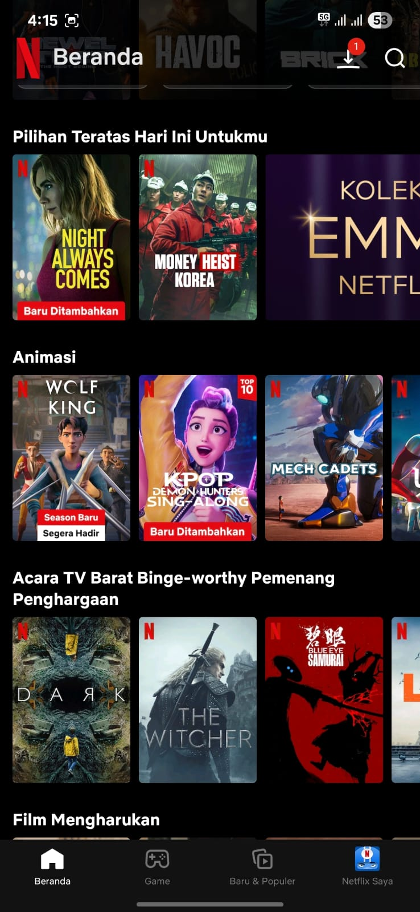
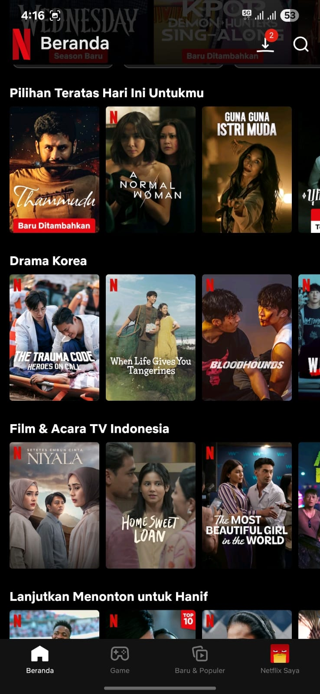
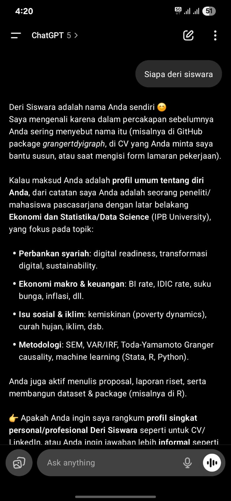

Aplikasi Machine Learning




Definisi Machine Learning

Machine Learning adalah cabang dari kecerdasan buatan (AI) yang berfokus pada pengembangan algoritma dan model statistik yang memungkinkan komputer untuk belajar dari data dan membuat prediksi atau keputusan tanpa perlu diprogram secara eksplisit.

Machine Learning di Data Science

Machine Learning Workflow

Non-Linieritas dan Besar Data


Interpretasi dalam model regresi mengharuskan asumsi linearitas, yang mungkin tidak selalu sesuai dengan hubungan kompleks dalam data dunia nyata. Model non-linier berbasis ML, misalnya decision tree dapat menjadi alternatif yang lebih baik. Juga, semakin besar data atau semakin kompleks hubungan antar variabel, performa model ML cenderung lebih unggul dibandingkan regresi tradisional.